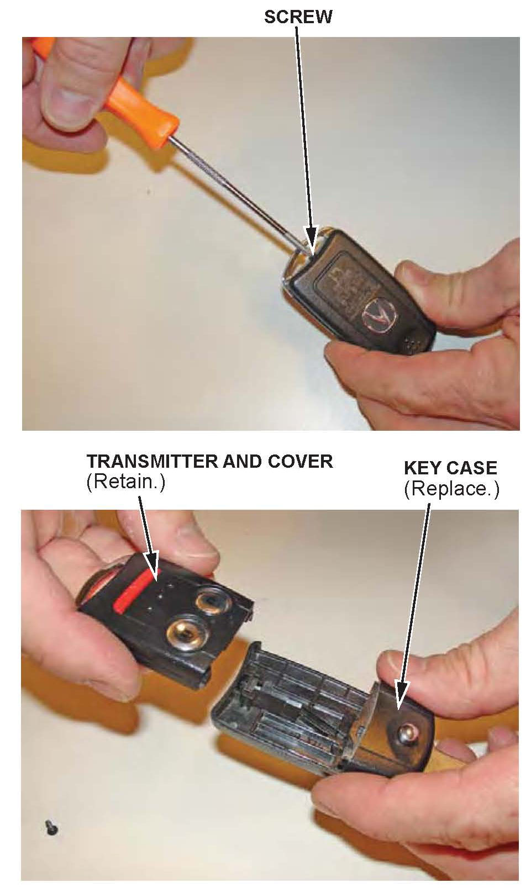

Locks - Master Key Won't Lock In Extended Position
10-008November 29, 2011
Applies To:
See VEHICLES AFFECTED
Retractable Master Key Does Not Lock in Its Extended Position
(Supersedes 10-008, dated April 26, 2010, to revise the information marked by the asterisks)
*REVISION SUMMARY
Under VEHICLES AFFECTED and PARTS INFORMATION, 2011-12 models were added.*
SYMPTOM
The retractable master key does not lock in its extended position.
PROBABLE CAUSE
The release button and the collar on the master key become worn after rough use.
VEHICLES AFFECTED
*2007-12 MDX - ALL*
*2007-12 RDX - ALL*
2007-08 TL - ALL
*2009-12 TL (without push button start)
2009-12 TSX Sedan - ALL
2010-12 ZDX (without push button start)*
CORRECTIVE ACTION
Replace the key case, cut the new key to match the original, then rewrite the transponder code into the immobilizer control unit with the HDS
PARTS INFORMATION
Key Case (does not include transmitter or cover):
2007-09 MDX Driver 1
P/N 35121-STX-305
2007-09 MDX Driver 2
P/N 35121-STX-306
*2010-12 MDX Driver 1
P/N 35120-STX-305
2010-12 MDX Driver2
P/N 35120-STX-306*
2007 RDX
P/N 35120-STK-305
*2008-12 RDX Driver 1
P/N 35121-STX-305
2008-12 RDX Driver 2
P/N 35121-STX-306*
2007-08 TL Driver 1
P/N 35120-SEP-305
2007-08 TL- Driver 2
P/N 35120-SEP=306
*2009-12 TL (without push button start) Driver 1
P/N 35120-TK4-305
2009-12 TL (without push button start) Driver 2
P/N 35120-TK4-306
2009-12 TSX Sedan Driver 1
P/N 35120-TL0-307
2009-12 TSX Sedan Driver 2
P/N 35120-TL0-308
2010-12 ZDX (without push button start) Driver 1
P/N 35120-TK4-305
2010-12 ZDX (without push button start) - Driver 2
P/N 35120-TK4-306*
WARRANTY CLAIM INFORMATION
The normal warranty applies.
Operation Number: 1161D3 (one or more keyless
remote modules)
Flat Rate Time: 0.4 hour
Failed Part: P/N 72147-S0K-A23
Defect Code: 03217
Symptom Code: 08201
Skill Level: Repair Technician
REPAIR PROCEDURE
NOTE:
Make sure to use a # 0 Phillips Screwdriver that is in good condition, and apply enough down force when removing the screw to avoid damaging the screw.

1 Using a # 0 Phillips screwdriver, remove the screw from the key case. Remove the cover and the key transmitter.
2. Follow the Decode and Copy instructions on the Matrix X key cutter to cut a new key with the new key case. This allows you to use the original key without needing the key code.
3. Assemble the cover and the transmitter onto the new key case, and install the screw.
4. To add a key with the HDS, you need these items:
^ The new master key
^ First password (This five character code is available on the iN.) Go to SERVICE, select Vehicle Information from the left column, then select Immobilizer Code Inquiry.
HDS with software 2.020.018 or later.
NOTE:
Make sure the market, the date, and the time on the HDS setup screen are correct. Select the F12 key in the upper right corner to get the Set-up Details screen. Make sure Market is set to USA. Select the time display in the lower right corner to get the Date/Time Properties pop-up window. Make sure the date and time are correct. For details, refer to the HDS Set-up Instructions listed under Tool Information in ISIS.
5. Connect the HDS to the DLC (data link connector).
6. Insert the client's original key (now without the keyless transmitter) into the ignition switch, and turn the switch to ON (II). Turn on the HDS.
7. At the screen prompts, enter the VIN and the odometer reading, then verify the correct date and time.
8. From the system Selection screen, select IMMOBI.
9. From the Immobilizer Test Mode screen, select Immobilizer Setup.
10. From the Immobilizer Setup screen, select Add and Delete Keys.
11. From the Add and Delete Keys screen, select Add 1 Key.
12. From the Add 1 Key screen, select Begin to Add 1 Key.
NOTE:
If there are six keys already in memory, you'll need to stop and do Delete or Add Multiple Keys, but that requires all of the client's keys. Any key not present will no longer start the engine.
13. From the first password screen, enter the first password, then follow the screen prompts. When you are finished, turn the ignition switch to LOCK (0), then turn off and disconnect the HDS.

Disclaimer